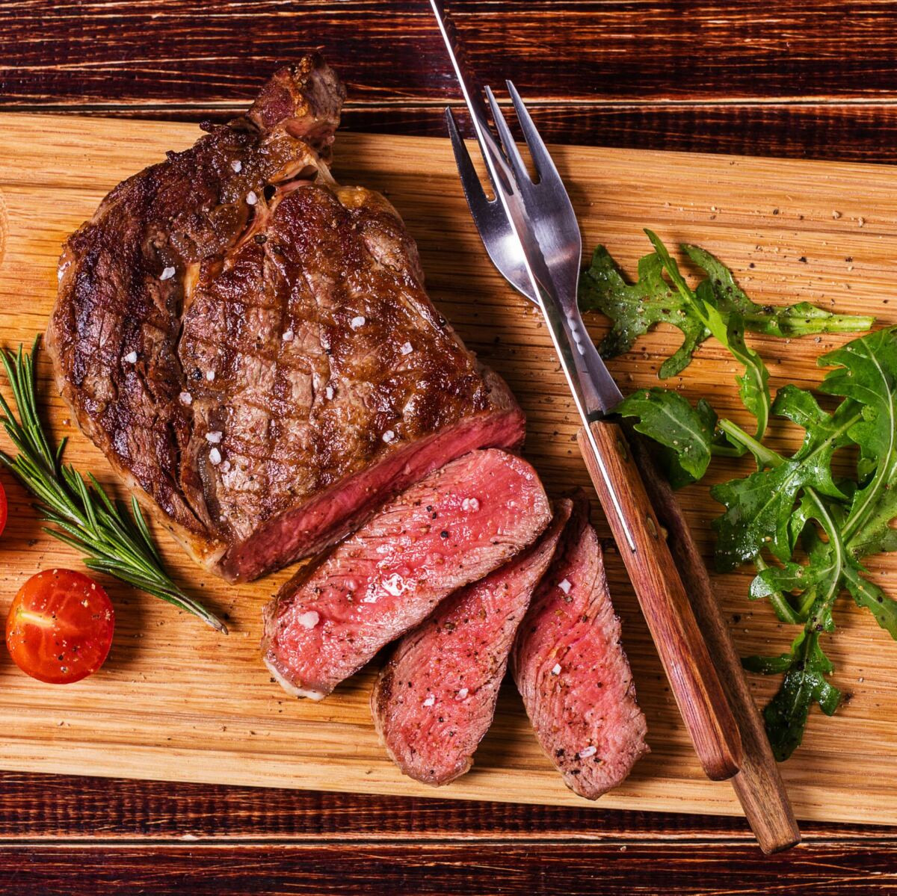

Ribeye Steak

Description
Steak is a gift from God for all to enjoy. All steaks are good steaks but if we are cooking one up we should make it the best we can.
Steaks are the best thing in the world and there is no reason to not cook one up. We use a grill in the recipe but you can use a skillet and an oven if needed!
if this is not your thing Click Here.
Ingredients
- Ribeye Steaks
- Even marbling throughout the steak
- Thinner steaks are easier to cook
- Seasoning
- Ribeye's have a lot of built in flavor so nothing fancy is needed but here are some recommendations
- unsalted butter
- black pepper
- seasoning salt
- Montreal Seasoning
- garlic
- coriander
- black pepper
- cayenne pepper flakes
- dill seed
- salt
- onion powder
Recipe
- Bring steak to room temp and season
- Heat grill to medium heat.
- Grill for 5-7 minutes
- Remove steak and add butter and let cool for 5 minutes
Home